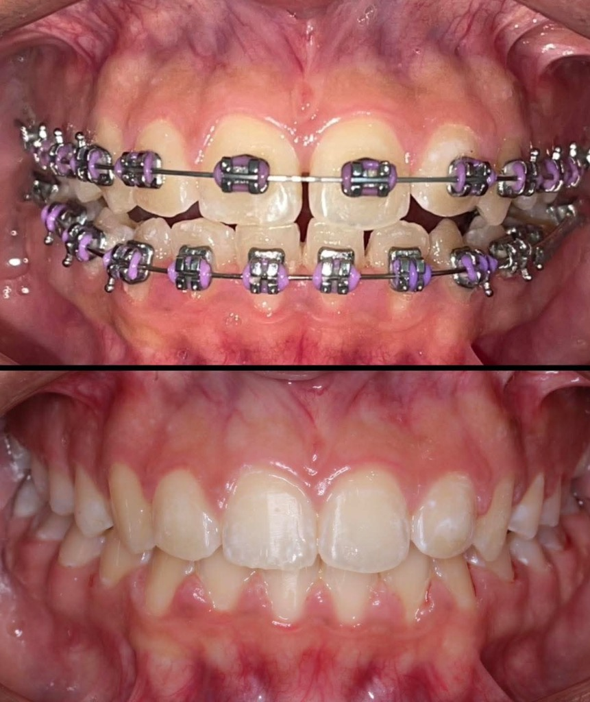
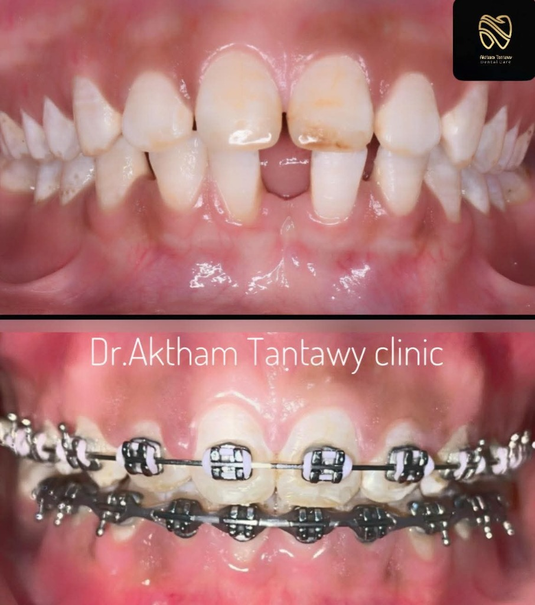

حالات واقعية.. ونتائج استثنائية
تصفح نتائج رحلة العلاج والتقويم لمرضانا، والتحولات الحقيقية في إطباق وجمال الابتسامات.

حالة واقعية للعيادةتعديل الازدحام الشديد وتطابق الفكين
علاج تزاحم الأسنان الحاد وتوسيع القوس السني دون الحاجة لخلع أي أسنان دائمية، مع ضبط مالي للإطباق.

حالة واقعية للعيادةإغلاق الفراغات الأمامية وتصحيح المحاذاة
علاج الفراغات الواسعة (الستيرما) بين الثنايا والرباعيات العلوية وإعادة بناء تماثل خط الابتسامة بنجاح تام.
تصحيح العضة العميقة (Overbite)
علاج التغطية الزائدة للأسنان السفلية ورفع العضة وتقديم الفك السفلي لتحسين المظهر الجانبي للوجه والابتسامة.
تصحيح العضة المعكوسة الجانبية
تصحيح انطباق الأسنان العلوية خلف السفلية جانبياً، وتحقيق محاذاة سليمة تمنع تآكل المفصل الصدغي.
علاج العضة المفتوحة الأمامية (Open Bite)
إعادة توجيه الأسنان الأمامية وتنزيلها لتتطابق بشكل سليم، وتصحيح وظائف التحدث والمضغ لثقة متجددة.
تقويم غير مرئي لمشكلة الفراغات والاعوجاج
علاج تجميلي ووظيفي بالكامل باستخدام قوالب الألاينرز الشفافة سريعة الفك والتركيب والمصممة رقمياً بالكامل.
زراعة فورية وتجميل فينير للأسنان الأمامية
تعويض سن مفقود بالزراعة الألمانية الفورية وتركيب عدسات الفينير الرقيقة لبقية الأسنان لابتسامة هوليودية متناسقة.